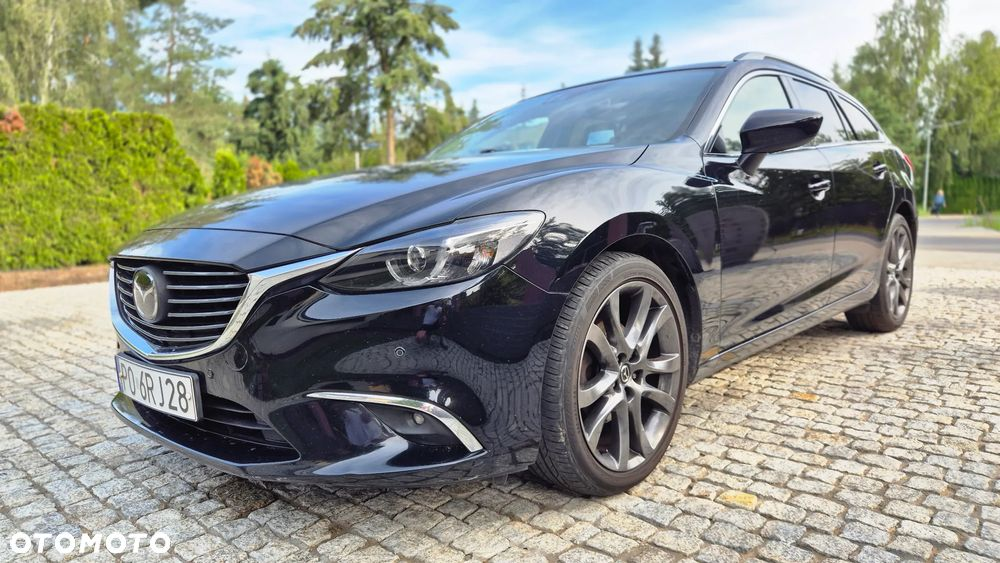
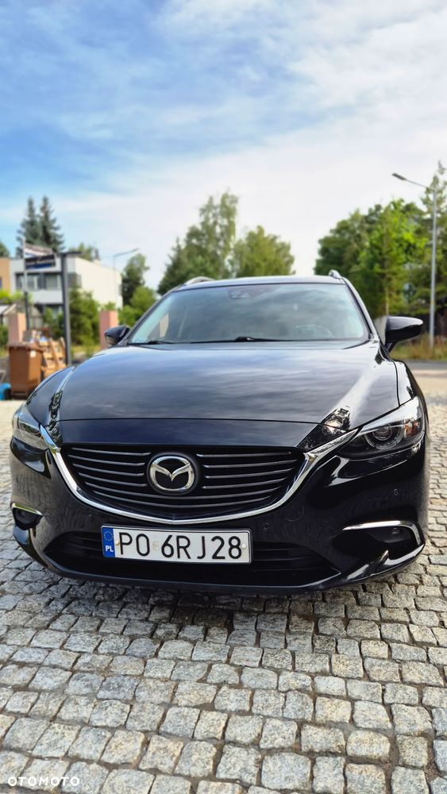
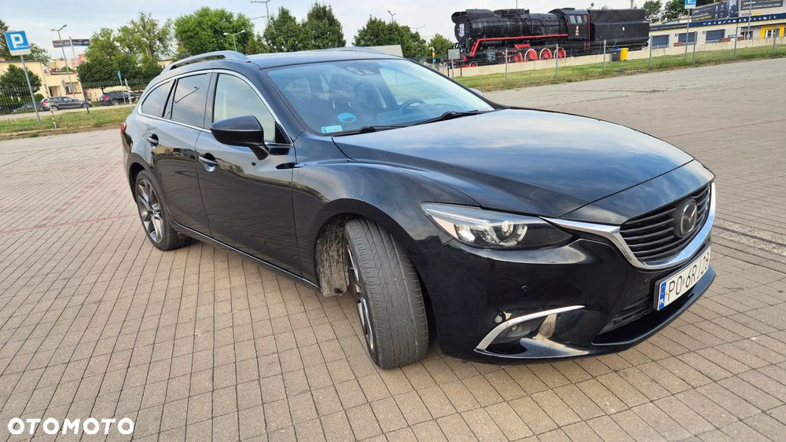
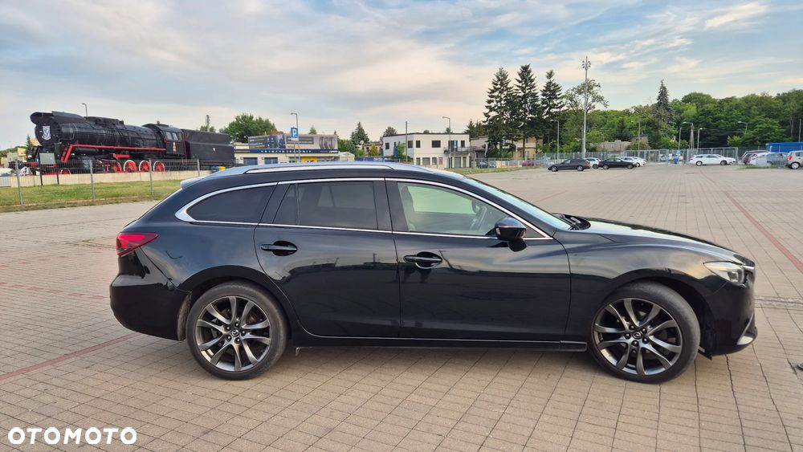
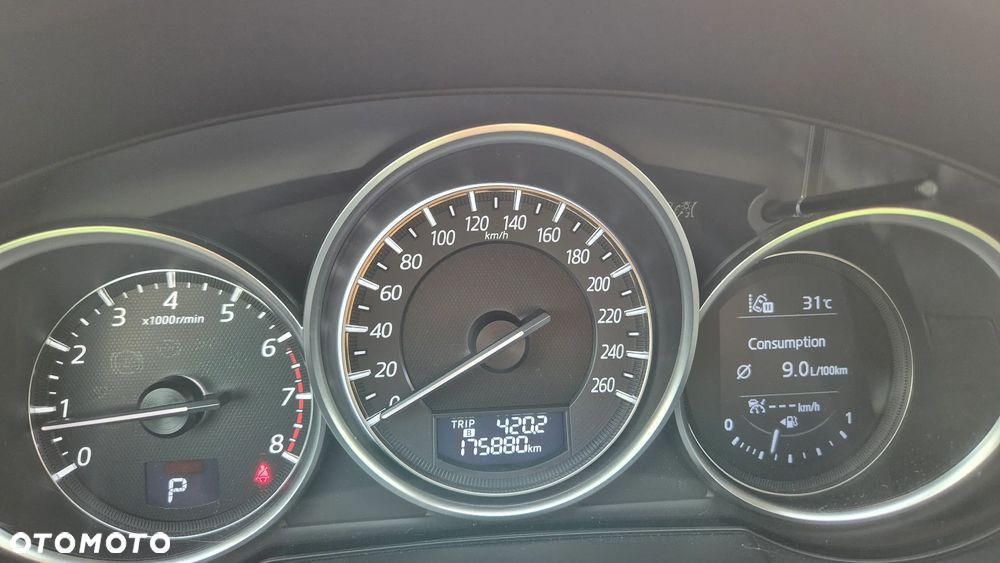
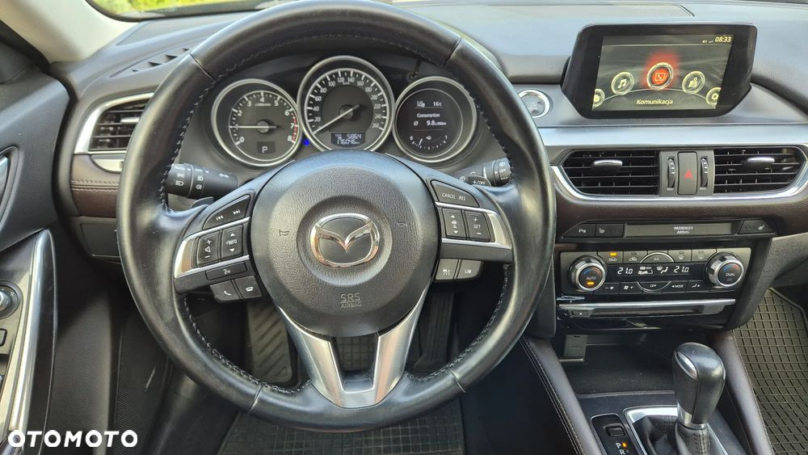
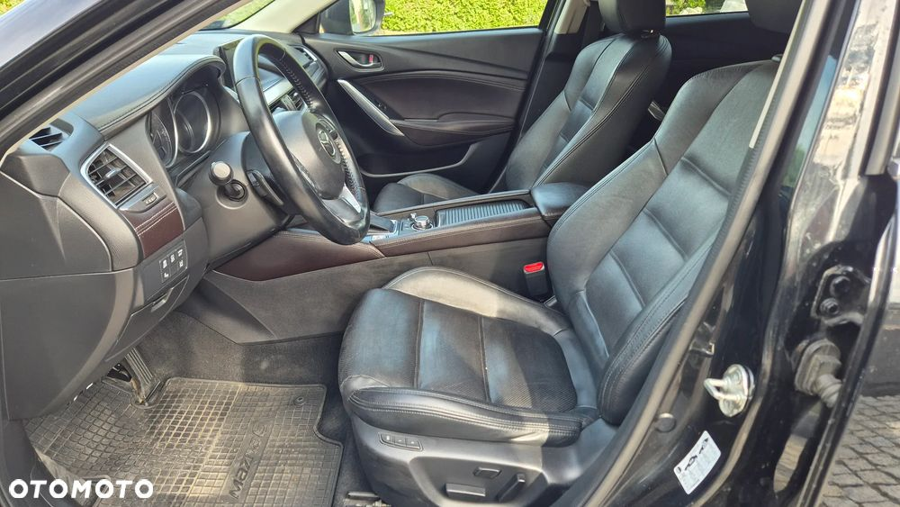
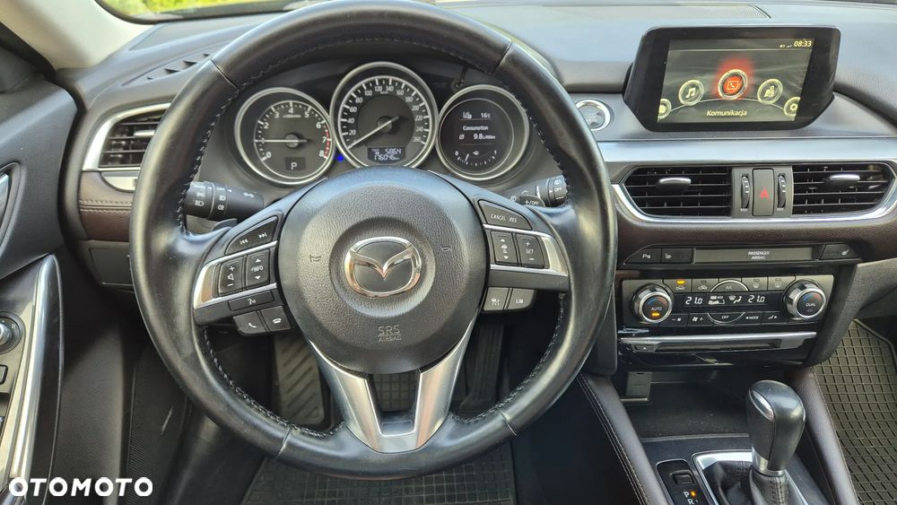
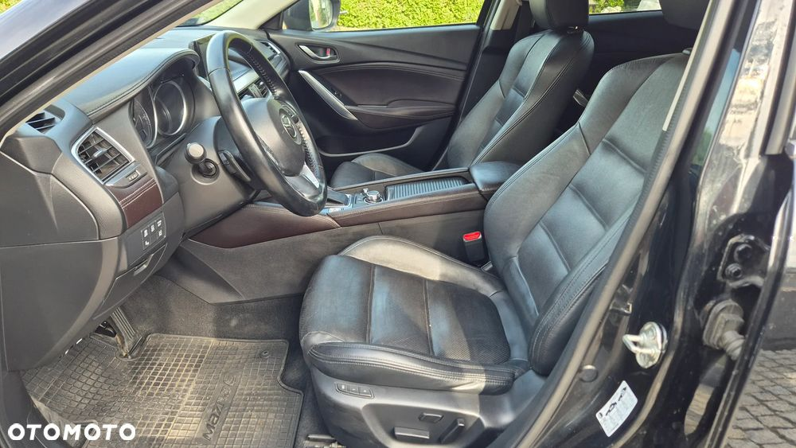

Polecam do kupna Mazdę 6 model 2.5 benzyna SkyPassion z systemem i-ELOOP. Jest to topowa wersja wyposażenia.
Samochód jest zadbany, w bardzo dobrym stanie technicznym, regularnie serwisowany, użytkowany przez kobietę, gotowy do jazdy.
Auto kupione w polskim salonie Mazdy przez pierwszego właściciela w sierpniu 2016, a ja w 2018 kupiłam od niego przy przebiegu 24 tys. km. W chwili obecnej przebieg wynosi 175.890 km. Wykupione z leasingu w 2020r.
Auto jest bardzo komfortowe, wdzięczne, bezawaryjne, bardzo dynamiczne, ekonomiczne.
Silnik 2.5 benzyna o mocy 192 KM pozwala na dynamiczne przemieszczanie się, a nieskomplikowany silnik (bez turbiny) nie psuje się. Do tego jeszcze bezawaryjna 6 biegowa automatyczna skrzynia biegów. System i-ELOOP pozwala odzyskiwać energię w trakcie jazdy i stąd jest ekonomiczny.
Wersja wyposażenia obejmuje m.in.: skórzaną tapicerkę, wyświetlacz head up na szybie, aktywny tempomat, kamerę cofania, czujniki martwego pola, podgrzewane i elektrycznie sterowane przednie fotele, z pamięciami, podgrzewane fotele tylne, klimatyzacja dwustrefowa, rozpoznawanie znaków, ledowe reflektory i światła dzienne, relingi dachowe, system audio BOSE, 19 calowe koła.
W cenie dokładam dodatkowo: komplet (felgi i opony) zimowe, dywaniki i aluminiowe belki bagażnika na relingi (jeden raz użyte).
Podczas całego okresu użytkowania auto miało tylko niewielkie szkody parkingowe (naprawiane w ASO). Faktura do wglądu.
Auto było garażowane, nigdy w nim nie palono papierosów. Użytkowane często w trasach.
Sprzedaję gdyż zmieniła się moja sytuacja życiowa, otrzymałam inne auto, a dwa nie są mi teraz potrzebne.
Zgadzam się na sprawdzenie auta w dowolnym serwisie ASO lub warsztacie wskazanym przez zainteresowanego.
Sprzedaję jako osoba prywatna i korzystam ze zwolnienia z podatku VAT.
 
